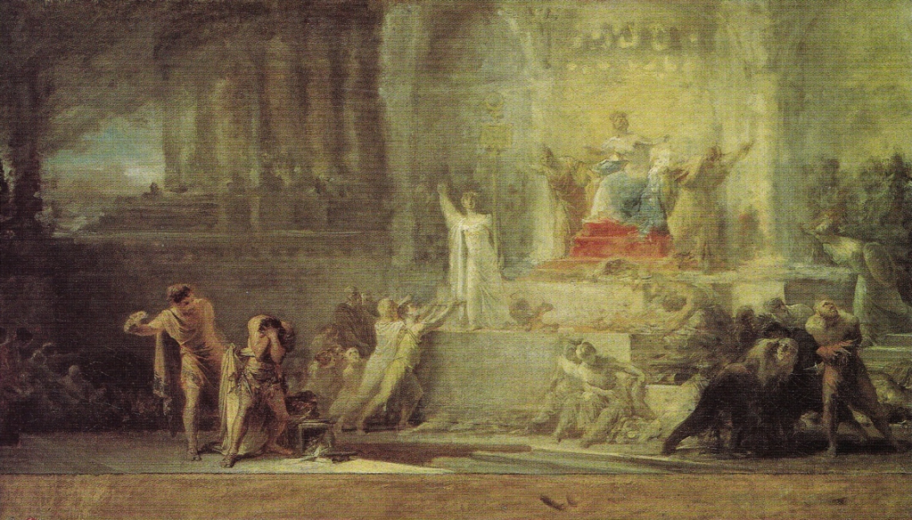

Portuguese Constitution of 1822
Introduction
The Portuguese Constitution of 1822 approved on 23 September 1822 was the first Portuguese constitution, marking an attempt to end absolutism and introduce a constitutional monarchy.
Although it was actually in force for two brief periods, 1822-23 and 1836-38, it was fundamental to the history of democracy in Portugal.
The constitution was the result of the work of the constituent cortes of 1820, convened after the Liberal Revolution.
Considered as generally progressive for its time, the constitution was largely inspired by the Spanish Constitution of 1812 as well as by the
French Constitution of 1791. It was divided into six sections among its key principles were:
- enshrining individual rights and duties for all citizens, whith human rights such as individual liberty, equality before law, and property rights guaranteed;
- establishing the nation of all Portuguese people as the basis for national sovereignity, which resided with and was to be exercised by the duty elected;
- defining the territory of the nation, the United Kingdom of Portugal, Brazil and the Algarves, consituted by the Kingdom of Portugal, the adjacent islands of Madeira e Azores, the Kingdom of Brazil and the territories in Africa and Asia.
- removing the feudal privileges of the Clergy and the Nobility.
